Color + Emotion
The goal of the project is to create 10 gifs which emohasize the emotion surprise by incorporating yellow color and basic shpaes. The audience may not feel surprise but they can see the definition or literal meaning of surprise when view the artworks.
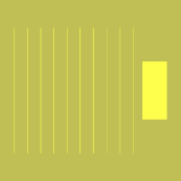
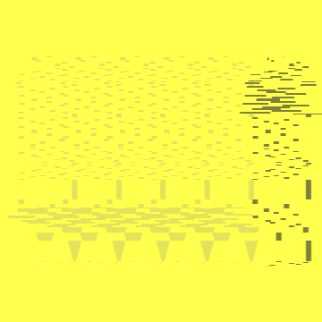
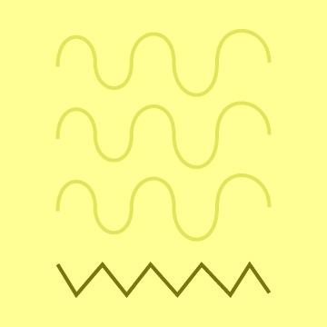
 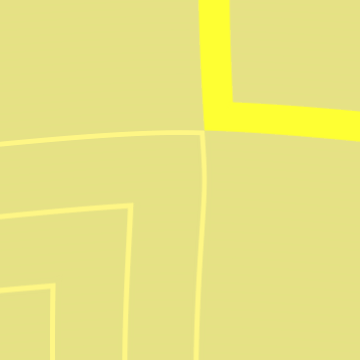
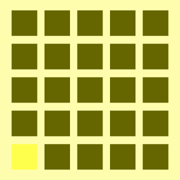
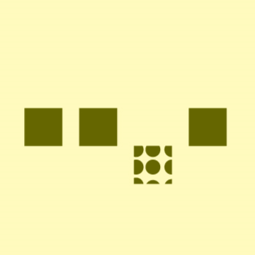
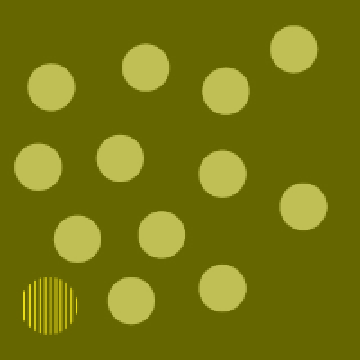
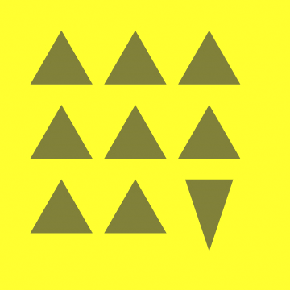
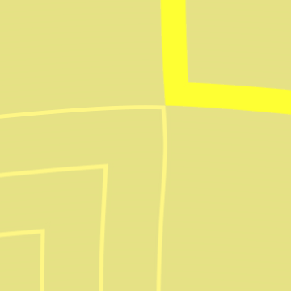
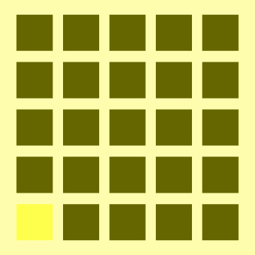
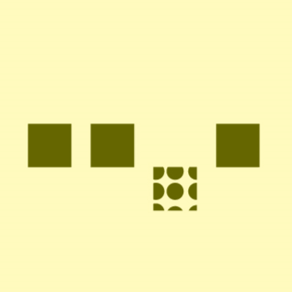
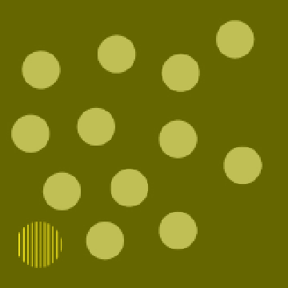
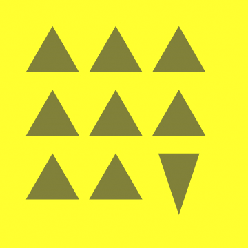
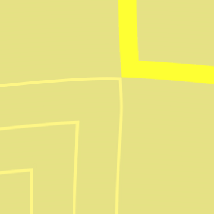
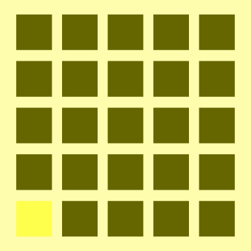
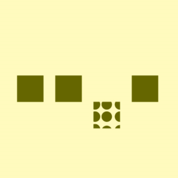
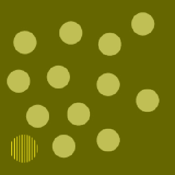
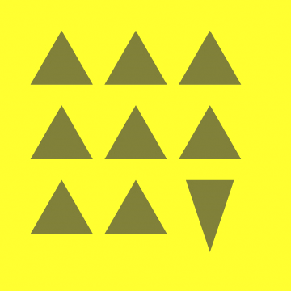